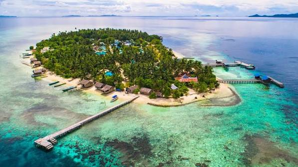
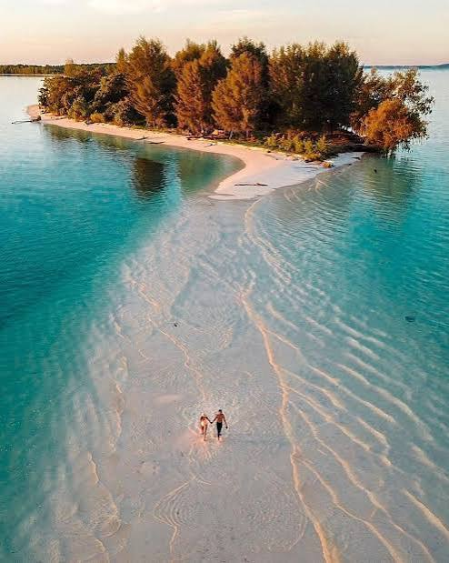

Ikan Bakar Manokwari
Ikan bakar berbumbu sambal khas Papua yang harum dan kaya rasa.
Susuri pulau-pulau tropis, jelajahi kampung pesisir, dan nikmati pengalaman bahari di Raja Ampat.
Pulau-pulau karst bertabur di atas laut biru; daki gardu pandang Piaynemo untuk menikmati panorama dari atas.

Gugusan karst yang tampak seperti labirin di tengah samudra; jelajahi jalur bukit untuk mencapai titik pandangnya.

Kampung pesisir yang hangat dengan tradisi bahari; snorkeling di dermaga Arborek untuk melihat ikan dan karang.

Hamparan pasir putih muncul di tengah laut saat surut; berjalanlah di atas pasir timbul ketika permukaan air aman.

Perairan kaya terumbu dan ikan tropis membentang di antara pulau; snorkeling bersama pemandu lokal di Selat Dampier.
Nikmati olahan hasil laut dan pengalaman budaya yang dekat dengan kehidupan masyarakat pesisir.
Ikan bakar berbumbu sambal khas Papua yang harum dan kaya rasa.
Umbi lokal yang kerap menjadi bagian dari sajian masyarakat Papua.
Olahan ikan berkuah rempah dengan warna kunyit dan cita rasa segar.
Kenali tas rajut tradisional dan karya tangan yang sarat nilai budaya.